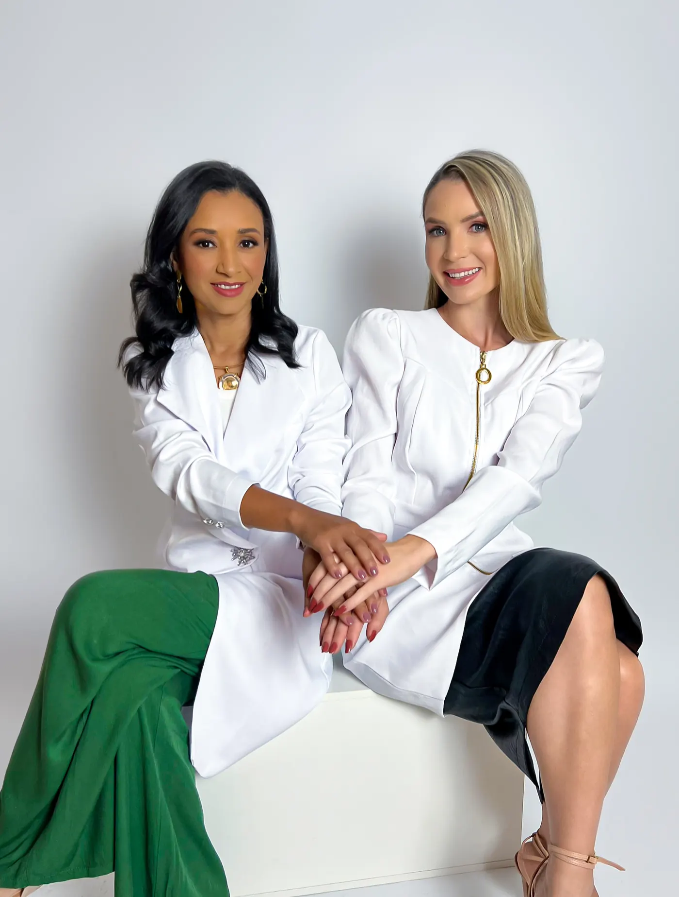
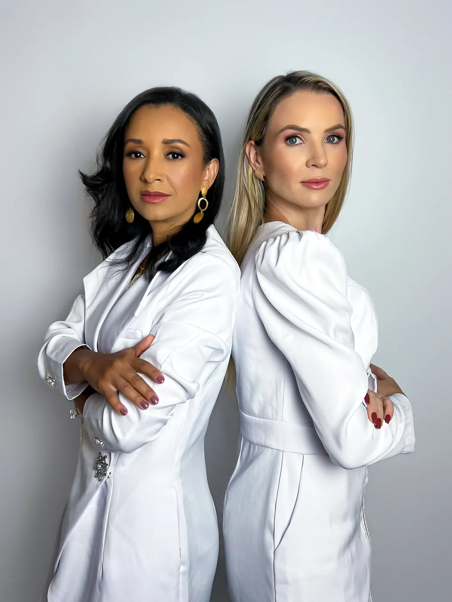
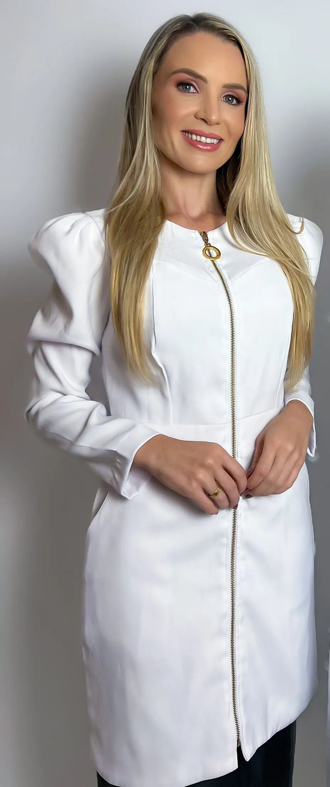

Qualidade antes do improviso
Com menos volume no prato, cada garfada precisa render mais. Você aprende o que priorizar.

A fome diminuiu e a dúvida cresceu: o que colocar no prato para não perder músculo, energia nem a tranquilidade? Em uma aula ao vivo, Juliana e Nayara transformam isso em decisões simples, com comida do dia a dia e sem terrorismo nutricional.
Você olha para o prato e come três garfadas. Parte de você comemora. A outra parte pergunta: será que estou comendo o suficiente? Esse enjoo é normal? Estou perdendo músculo? Entre o print de rede social e a opinião de quem nunca viu o seu caso, é fácil ficar tentando entender tudo sozinha.
Aqui você troca o barulho da internet por uma explicação organizada e sai com um plano possível, não com mais uma lista de proibições.

Ciência, rotina e cuidadoA caneta muda a fome e a saciedade. Ela não muda a necessidade do seu corpo por proteína, fibras, água e micronutrientes. Por isso o cuidado com o prato continua importante, e dá para fazer isso sem terrorismo e sem regra impossível.
Com menos volume no prato, cada garfada precisa render mais. Você aprende o que priorizar.
Saiba o que observar nos sintomas e quais perguntas levar ao seu médico e à sua nutricionista.
Organize um próximo passo que respeite sua rotina, seu corpo e a orientação da sua equipe de saúde.
Quatro decisões simples, que você consegue aplicar já na próxima refeição.
Conhecimento técnico, experiência clínica e uma linguagem que respeita a vida real.
Nutricionista CRN9 22234, especializada em saúde da mulher, equilíbrio hormonal e intestino. Há mais de 6 anos na prática clínica, já acompanhou mais de 6 mil mulheres com um método de nutrição de precisão, funcional e personalizado.

Nutricionista CRN9 33442, formada pela Universidade Federal de Uberlândia e pós-graduanda em Nutrição Esportiva, Saúde da Mulher e Estética pela Plenitude. Atua com emagrecimento, hipertrofia, saúde hormonal e intestinal.
Porque alimentação, sintomas, exames, comportamento e rotina entram na conversa juntos, com linguagem de gente. Você começa pela aula e só aprofunda se fizer sentido, sem precisar decidir tudo antes de entender o que realmente precisa.
Uma aula conduzida por Juliana Moreira e Nayara Rissi para você entender o que priorizar, o que observar e como sair do “não sei se estou fazendo certo” para uma rotina mais consciente durante o uso de GLP-1.
Entenda o contexto do GLP-1 e os principais desafios nutricionais que aparecem quando a saciedade muda.
Veja como pensar em proteína, fibras, hidratação e densidade nutricional sem transformar cada refeição em uma conta impossível.
Aprenda o que observar na tolerância alimentar e quais pontos conversar com sua equipe de saúde.
Saia da aula com um primeiro ciclo de observação para levar o conhecimento à rotina.
Um espaço ao vivo para organizar dúvidas reais e ampliar sua clareza com responsabilidade.
Você recebe uma sequência simples de orientações e check-ins para transformar o conteúdo do webinar em uma primeira experiência prática.
As duas modalidades incluem a aula ao vivo, o espaço para dúvidas e o desafio de 7 dias. A diferença está no nível de personalização e no tempo de acesso.
Para quem quer entender o que priorizar e seguir com a própria equipe de saúde.
Para quem quer cardápio quantitativo, análise de exames e uma conversa individual.
As vagas do VIP são limitadas à nossa capacidade real de atendimento, para que cada cardápio e cada consulta tenham o cuidado que merecem.
O webinar é a porta de entrada. A continuidade depende do nível de suporte que você procura.
É normal querer entender se a experiência combina com o seu momento. Aqui estão as perguntas mais importantes.
Não. A aula também pode ajudar quem está considerando iniciar e quer chegar mais preparada para conversar com seus profissionais de saúde.
Não. O webinar é educativo. O VIP inclui uma mini consulta com uma das nutricionistas, dentro do escopo apresentado na oferta.
Sim. Ele foi desenhado para quem quer cardápio quantitativo, análise do caso e orientações personalizadas dentro das entregas descritas.
Após a aula, você recebe mensagens curtas e orientações para observar sua rotina, participar da comunidade e organizar o próximo passo.
Não. A primeira turma terá limite de vagas conforme a capacidade real de atendimento das nutricionistas.
O Essencial traz a aula, o desafio, o guia geral e a comunidade. O VIP inclui tudo isso e acrescenta a análise do seu caso: questionário completo, cardápio quantitativo e mini consulta de 30 minutos.
Você tem acesso à gravação: 30 dias no Essencial e 3 meses no VIP. Mesmo assim, vale tentar estar ao vivo para tirar suas dúvidas na hora.
Escolha a modalidade que combina com o momento que você está vivendo e participe da primeira turma. O webinar ao vivo acontece no dia 19 de novembro, às 19h (horário de Brasília).
Quero escolher como participar